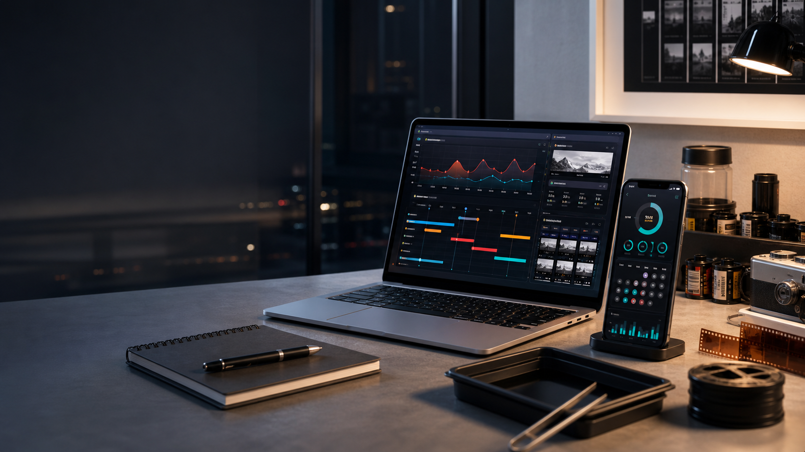

GrindDialing
一款面向意式与精品咖啡的研磨拨粉助手，帮助你把咖啡豆、磨豆机、冲煮方法和每一次出品记录在同一个流程里。
- 记录咖啡豆、磨豆机、冲煮方法与每一次出品。
- 在真实磨豆机刻度上获得下一次调整方向。
- 把感官反馈、萃取参数和复盘历史放在同一个地方。

正在准备
这个页面是项目正式上架前的公开入口：记录产品方向、发布状态，以及那些值得被看见的细节。
应用
一款面向意式与精品咖啡的研磨拨粉助手，帮助你把咖啡豆、磨豆机、冲煮方法和每一次出品记录在同一个流程里。
一款安静的暗房计时器与显影记录本，用来保存可重复的配方，减少盯着时钟的不安。
GrindDialing
GrindDialing 是 Friday 正在开发的 Coffee Bean Grinder 项目中的核心 app。它从一个真实痛点开始：同一款豆子换了烘焙日期、磨豆机、冲煮方法或环境后，原来的刻度就不一定可靠。它希望帮助用户更快回到可喝、可调整、可记录的状态。
咖啡 dial-in 经常靠经验和手感，但很多经验并不能直接迁移。Comandante 的点击、Mazzer 的数字刻度、手摇磨的圈数和电磨的旋钮都不是同一种语言；即便是同一台机器，不同豆子、不同冲煮方式也会让判断重新开始。
GrindDialing 的目标不是替代咖啡师的判断，而是帮你保留判断发生的上下文：这次用了什么豆子、什么磨豆机、什么方法、什么参数，喝起来如何，下一次该往哪里调整。
这个页面只介绍 GrindDialing 的产品目标、使用流程和用户价值，不公开参数建模、推荐逻辑、学习策略、数据结构、具体公式、内置资料校准细节，或任何让产品具备差异性的实现部分。对外表达只需要清楚：它让咖啡 dial-in 更可记录、更可复盘、更容易继续调整。
FilmDevMonitor
FilmDevMonitor 来自一个很具体的暗房痛点：显影不是单纯按下计时器，而是一连串温度、药液、容量、搅拌、阶段切换和安全判断。它希望把这些容易遗漏的动作整理成一个安静的流程台，让每一次冲洗都更稳、更可复盘。
胶片显影最怕“差一点”：差一点忘记搅拌、差一点看错药液、差一点低估罐体容量、差一点把 C-41、E-6、ECN-2 或黑白流程混在一起。很多失败不是审美选择，而是流程记忆在黑暗、潮湿和时间压力下被打断。
FilmDevMonitor 的初衷是把暗房里需要被稳定执行的步骤集中起来：先确认胶片、流程、显影罐、格式和目标容量，再进入计时和阶段管理。它服务的是创作者的判断，而不是替代官方手册、SDS 或实验室安全规范。
这个页面只介绍 FilmDevMonitor 的产品目标、使用场景和安全边界，不公开流程数据组织、兼容性判断、计时调度、试剂估算、资料来源处理、离线参考库结构，或任何让产品具备差异性的实现部分。对外表达只需要清楚：它是暗房流程的离线参考与辅助工具，不替代官方说明书、SDS、当地法规或专业实验室监督。
笔记
我喜欢尊重专注的工具：更少的仪表盘，更清楚的决策，以及一点点藏在日常机器里的美感。
有些项目来自研究基础设施，有些来自生活里的摩擦，有些来自深夜写下的一句话，后来一直要求自己变成一个 app。
更新
商店链接、发布说明和支持信息会随着每个 app 进入 review 阶段陆续放到这里。早期交流或支持问题可以写信到 Liao_Chenyan@yeah.net.